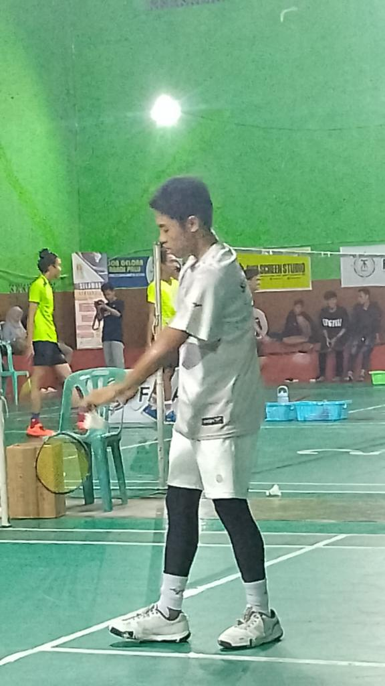

Nama saya Zakir, saya adalah seorang pelajar yang hobi bermain bulu tangkis. Sejak kecil saya mengenal olahraga ini dari ayah saya, dan sampai sekarang bulu tangkis menjadi salah satu kegiatan favorit saya dan suatu hari saya bisa membanggakan orang tua saya dari olahraga badminton.
Melalui bulu tangkis, saya belajar banyak hal baru terutama tentang teknik permainan seperti servis, smash, drop shot, dan netting. Saya juga belajar pentingnya konsentrasi dan strategi saat bertanding.
Selain meningkatkan kebugaran fisik, bulu tangkis juga mengajarkan saya arti kerjasama tim saat bermain ganda, disiplin dalam latihan, serta tanggung jawab untuk selalu berusaha lebih baik.
Pengalaman bermain bulu tangkis membuat saya lebih percaya diri, menambah banyak teman baru, dan memotivasi saya untuk terus berlatih agar bisa mengikuti pertandingan di masa depan,saya tidak hebat tapi saya berusaha.
